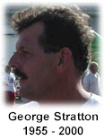

|
CHRYSLER JEEP DETROIT APBA GOLD CUP July 6-9, 2000
*** THE ANNUAL SODT FINISH / START PARTY --- SEPTEMBER 28
The annual FINISH / START party will be Thursday September 28,
at the VFW BRUCE POST in St. Clair Shores. It's North of 11
Mile at 28404 Jefferson. 6 to 10pm.
Join us for socializing, a dinner buffet, award presentations,
door prizes, and of course the standard party fare (beer!).
This is not a mandatory meeting. Free to members, guests $12.
To RSVP or for further info Call 313-331-7770
*** A VERY SAD DAY FOR THE HYDRO COMMUNITY - SEP 17
George Stratton, driver of the U-5 Appian Jeronimo & Lowry's Big
Beef Jerky hydroplane was fatally injured today during practice
runs on Mission Bay in San Diego.
Racing power boats was Stratton's life long passion. Stratton's
racing background includes five world speed records, four national
championships, three national high point championships and induction
into the American Power Boat Association's Hall of Champions. During
his two decades of power boat racing, Stratton was a top contender in
the flatbottom classes before making the switch to hydroplanes.
Mark Weber in the U-10 York Heating and Air Conditioning made
his way out onto the course to take a one lap tribute for his
USA Racing Partners teammate, then returned to the pits and
the team withdrew from the race.
Our thoughts and prayers go out to George's family and the USA
Racing Partners team. We will miss you George.
 *** THE SAN DIEGO BAYFAIR WORLD SERIES OF POWERBOAT RACING After no first place finishes in the preliminary heats, Dave Villwock and the Miss Budweiser had a great start in the final to go wire-to-wire for the win.
1st - Miss Budweiser (U-1), driver Dave Villwock
Dave dedicated his victory lap to George Stratton, touring it in the reverse direction (clockwise) as a memorial note. *** THE "POWERBOAT LIST" ON THE INTERNET HAS IMPROVED LATELY
New contributors to the email-based "Powerboat List" include
Steve Montgomery (the Hydros espn2 announcer), Gary Garbrecht
(co-owner of Hydro-Prop), and J. Michael Noonan (chief referee).
They've stepped up to explain fine points that many of us have
wondered about, and to discuss ideas for the future of the
sport. As a result, the amount and quality of info & discussion
has risen greatly. For details about subscribing to the list:
- Brian Reed (Volunteer WebMaster) |
|
All contents Copyright © 2000 Spirit of Detroit THUNDERFEST, except where noted.
Written by Brian Reed.
|